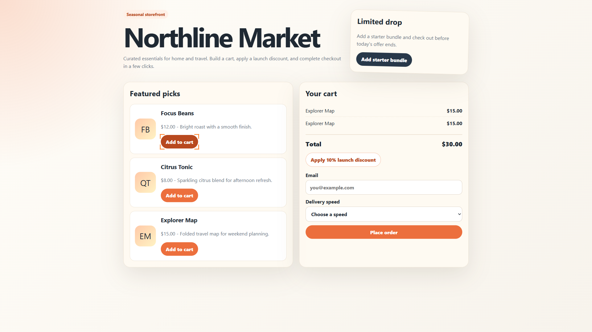

1 failed / 2 runs
Run 02
FailedThe 'Add to cart' button for 'Focus Beans' (index 10) appears to be incorrectly adding 'Explorer Map' to the cart instead of the intended item. Re-testing to confirm.
The 'Add to cart' button for 'Focus Beans' appears to be incorrectly adding 'Explorer Map' to the cart; testing 'Citrus Tonic' button to see if the issue is site-wide.
Confirmed that 'Add to cart' buttons for 'Focus Beans' and 'Citrus Tonic' incorrectly add 'Explorer Map' to the cart instead of the selected item.
URL: http://127.0.0.1:8765/site-1/
Action: {"click":{"index":10}}
